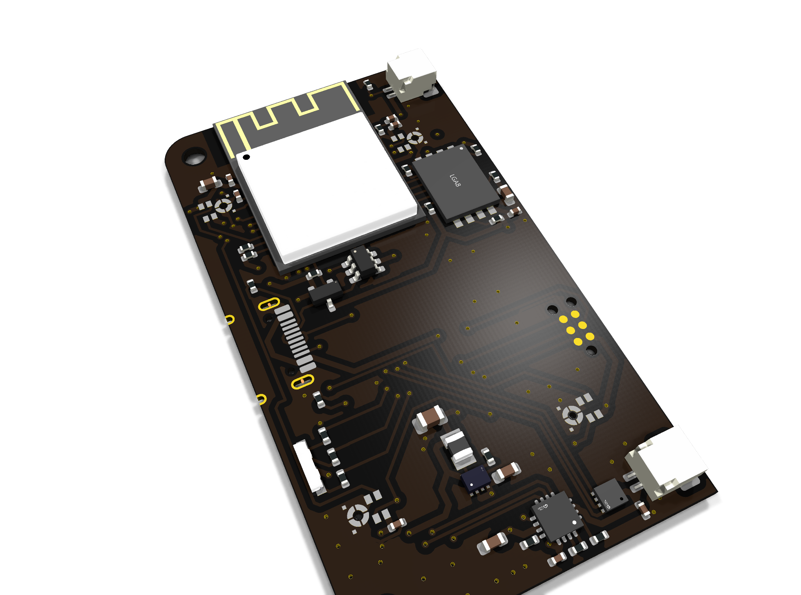
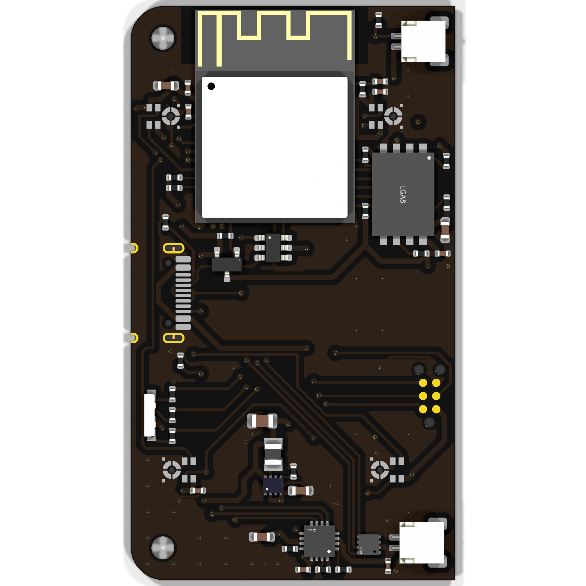
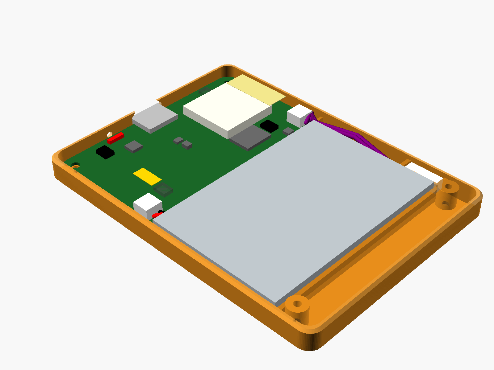

1.Motivation
Commercial AI note-taking recorders are inexpensive to buy, but transcription requires a monthly subscription and the vendor's cloud service. If the vendor stops operating, the device can still record but loses transcription. I wanted the same pocket form factor with every layer open (MIT/Apache-licensed components) and running on hardware I own.
The target bill of materials is about $50. Transcription on a local GPU
costs a fraction of a cent per audio hour, and even a paid cloud speech
API is roughly 10× cheaper than the subscription's effective hourly
rate. The speech-to-text backend is configured with a single
base_url that uses the OpenAI
/v1/audio/transcriptions format, so local faster-whisper,
Groq, or OpenAI can be used interchangeably.
2.The device
The firmware pipeline is capture → encode → store → sync → sleep. PDM microphones feed an Opus encoder, and chunks are written to a power-cut-safe littlefs filesystem. WiFi upload happens only when the battery can afford it, and the board sits in deep sleep otherwise. Updates go over the air to A/B slots, gated by a per-device token. A production overlay adds Secure Boot, flash encryption, and anti-rollback, staged to be burned only when a unit is sealed.
The board schematic is generated from code and the layout is fully routed. It passes DRC with zero errors and a clean schematic/layout parity check, and a SPICE suite run on the routed parasitics passes. Every BOM line is sourced from a single assembler. The prototypes have all four microphones populated to allow wake-on-sound and beamforming experiments; production builds would use two.


3.The server
The gateway and diarizer are code-complete. An upload goes through ingest, reassembly, speech-to-text, and speaker diarization, followed by extraction of key phrases, tasks, and a summary, which are published as a subscribable calendar feed. The server provides full-text search, semantic search over recordings, and a review UI with synchronized audio playback, along with retention policies, token authentication, and TLS certificate pinning to the device. The planned deployment is an always-on Raspberry Pi receiver that passes compute-heavy jobs to a GPU workstation over my private network.
4.Rev A bring-up
The assembled rev A boards flash and boot the application, but on bench USB power with no battery connected they brown out. The cause is the charger's input-current-limit pins, which are driven by MCU GPIOs that default low; until the firmware configures them, the charger limits input current to 100 mA. The ROM bootloader does not run our code, so flashing and early boot are always limited to 100 mA, and without a battery to supply current peaks from the radio and flash erase, the supply rail drops out.
For rev B, running and flashing from USB-C alone is a requirement. The current limit will be set high in hardware (firmware can still lower it), with a buck-boost regulator, additional bulk capacitance, a USB-UART bridge, and bench test points. Rev A bring-up continues with a battery connected.